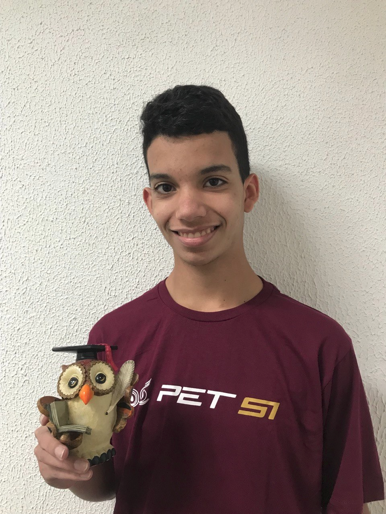

Luan Pereira Pinheiro
Me chamo Luan e sou estudante de Sistemas de Informação na USP. Tenho bastante interesse por programação, principalmente por algoritmos e programação competitiva, e atualmente trabalho como engenheiro de software na Accenture. De 2022 a 2025, participei do PET-SI, pelo qual tenho muito carinho, e estive envolvido em projetos como o OwlBI e o BXComp. No meu tempo livre, gosto de ouvir música, aprender coisas novas e passar tempo com meu cachorro Puppy.